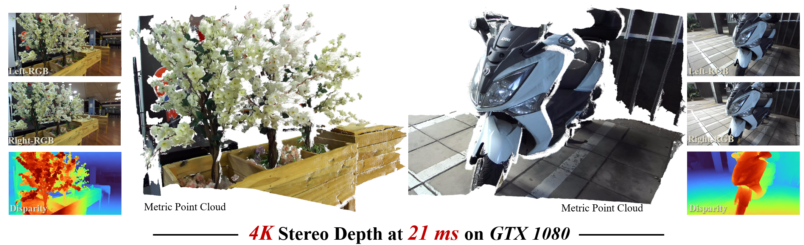
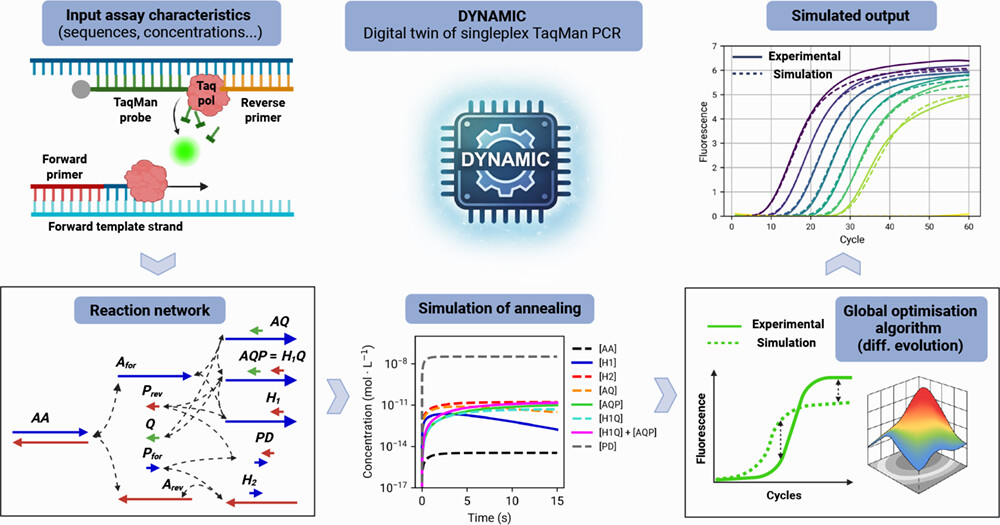
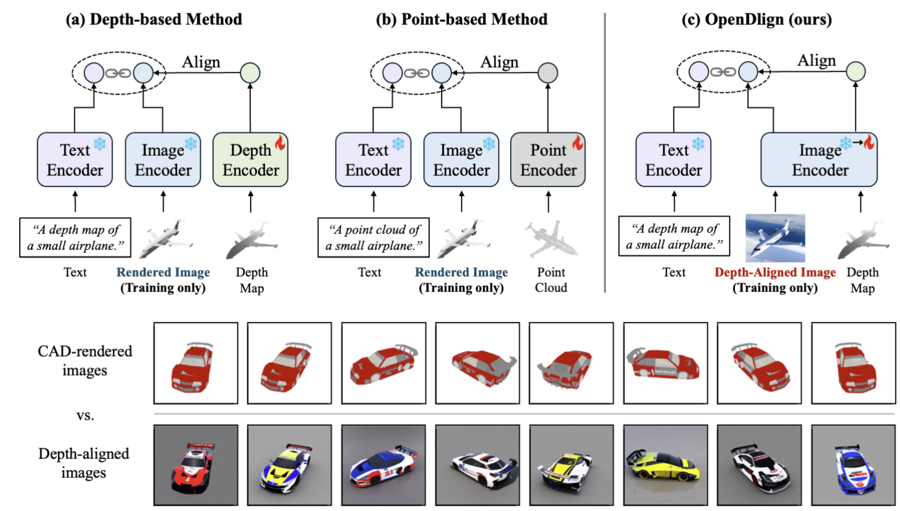
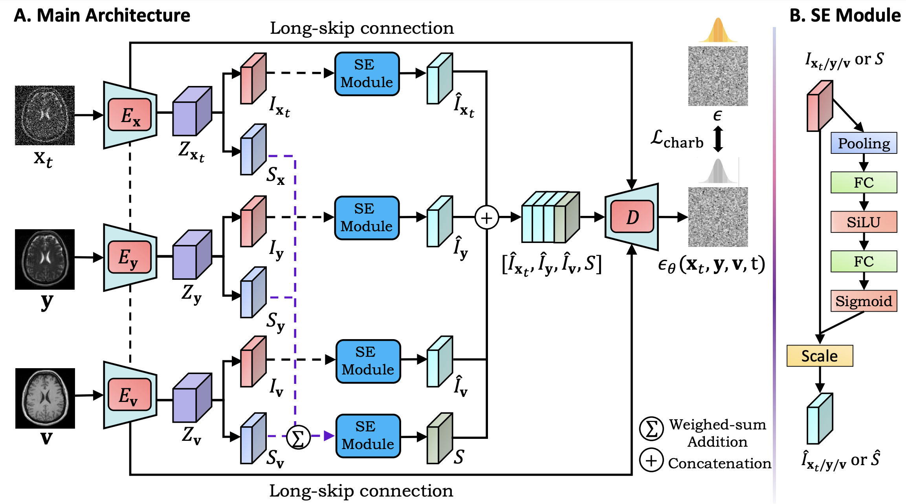
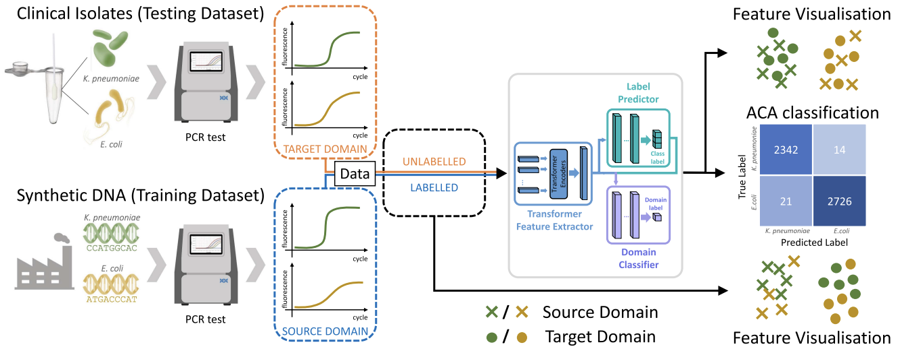

Lite Any Stereo: Efficient Zero-Shot Stereo Matching
Junpeng Jing, Weixun Luo, Ye Mao, and Krystian Mikolajczyk
PhD candidate at Imperial College London working on 3D scene understanding, spatial intelligence, and multimodal large language models.
Building generalizable 3D perception systems that bridge geometry, semantics, and open-world reasoning across real-world environments.
Research interests, academic background, and the broader agenda guiding current work.
I am a PhD candidate in Computer Vision and Machine Learning at MatchLab, Imperial College London, supervised by Prof. Krystian Mikolajczyk and supported by the Imperial President's Scholarship .
My research focuses on 3D scene understanding, vision–language models, and open-world learning. I am particularly interested in developing generalizable spatial intelligence models that can reason over real-world indoor environments and transfer effectively across diverse 3D tasks.
Before starting my PhD, I completed an MPhil in Medical Sciences at the University of Cambridge and an MSc in Applied Machine Learning at Imperial College London. I previously studied Computer Science and Robotics at King's College London.
Selected publications spanning 3D scene understanding, stereo matching, multimodal learning, and medical imaging.

Junpeng Jing, Weixun Luo, Ye Mao, and Krystian Mikolajczyk
Ye Mao, Weixun Luo, Ranran Huang, Junpeng Jing, and Krystian Mikolajczyk

Louis Kreitmann, Ye Mao, Ke Xu, Alison Holmes, Karen Brengel-Pesce, Laurent Drazek, and Jesus Rodriguez-Manzano

Junpeng Jing, Weixun Luo, Ye Mao, and Krystian Mikolajczyk

Ye Mao, Weixun Luo, Junpeng Jing, Anlan Qiu, and Krystian Mikolajczyk

Ye Mao, Junpeng Jing, and Krystian Mikolajczyk

Junpeng Jing, Ye Mao, and Krystian Mikolajczyk

Ye Mao, Lan Jiang, Xi Chen, and Chao Li

Lan Jiang, Ye Mao, Xi Chen, and Chao Li

Ye Mao, Ke Xu, Luca Miglietta, Louis Kreitmann, Nicolas Moser, Pantelis Georgiou, Alison Holmes, and Jesus Rodriguez-Manzano
Education, research appointments, teaching, service, and technical strengths.
Scholarships and prizes recognising academic excellence across research and study.